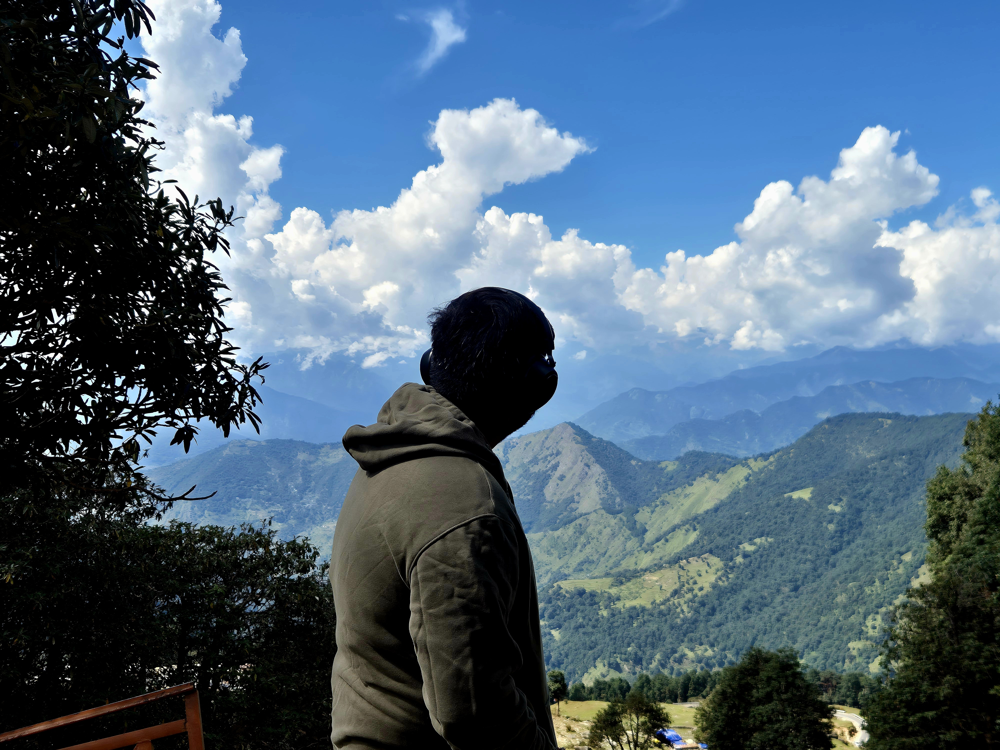

Hum dono agar kar sakte hai toh tu bhi kar sakta hai


Something I love
What I usually do
Something said by my favourite artist
I am Passionate about
I lowkey need the most
Dreamer
Designer
Humanist
A little more about me
Beyond 9–5
Okay, enough about the work. Meet the designer behind it.
When I’m not designing, I’m usually somewhere between chasing tiny details with my macro camera, playing cricket, getting a workout in, hunting for something new while shopping, cooking up something in the kitchen, or slowing things down with a little spirituality. Basically, a mix of curiosity, movement, creativity, and a little bit of chaos — the things that keep me inspired beyond the screen.

Curious by design. People first. Pixels second.